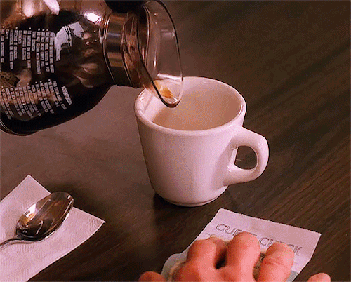
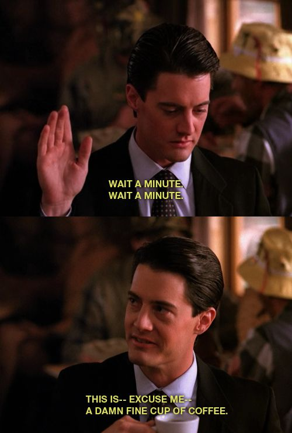
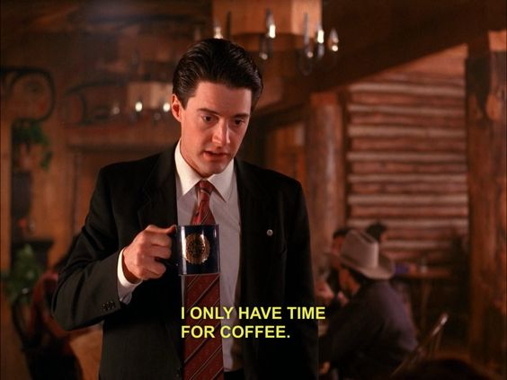
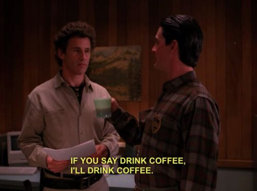
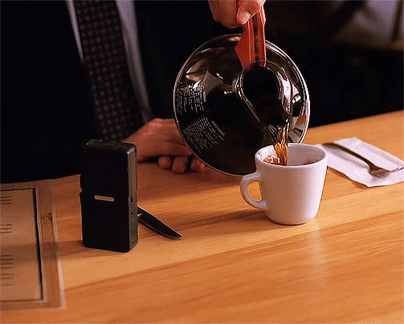

coffee in twin peaks
Twin Peaks is a cult classic television series created by Mark Frost and David Lynch and broadcasted in the 1990s.
The show and its characters, especially Agent Dale Cooper, had an affinity for coffee and cherry pie. The former can be seen below.